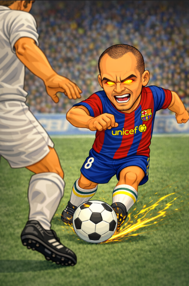

Andrés Iniesta: el genio silencioso del fútbol
Inicios
Andrés Iniesta nació en Fuentealbilla, España, y desde muy pequeño destacó por su técnica y sensibilidad con el balón. Ingresó a La Masía del FC Barcelona siendo apenas un niño, donde su talento y humildad llamaron la atención de entrenadores y compañeros. Xavi Hernández llegó a decir que Iniesta era el jugador con más talento que había visto en la cantera.
Trayectoria en clubes
- FC Barcelona: El club de su vida, donde se convirtió en leyenda y pieza clave de una de las mejores eras del fútbol mundial.
- Vissel Kobe: El cierre de su carrera, llevando su clase y experiencia al fútbol japonés.
Logros y reconocimientos
Iniesta fue protagonista de los mayores éxitos colectivos:
- Campeón del Mundo 2010 (autor del gol decisivo en la final)
- 2 Eurocopas (2008 y 2012)
- 4 UEFA Champions League
- 9 Ligas con el FC Barcelona
- Mejor Jugador de la Eurocopa 2012
Su gol en la final del Mundial 2010 lo convirtió en héroe eterno del fútbol español.
Impacto y legado
Iniesta representó los valores del fútbol: respeto, humildad y excelencia. Nunca fue polémico, pero siempre decisivo. Su influencia trascendió los títulos, siendo admirado incluso por rivales.
Estilo de juego
Control orientado perfecto, regate en espacios reducidos y visión extraordinaria. Iniesta jugaba al ritmo que el partido necesitaba. Un futbolista capaz de desaparecer del radar y aparecer en el momento exacto para cambiar la historia.